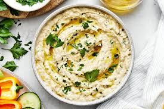

Baba Ganoush

Descripción
El babaganoush es una pasta a base de berenjenas típica de varios países de Oriente Medio.
Suele servirse con pan pita o árabe.
Ingredientes
- Berenjena
- Ajo
- Limón
- Tahine (pasta de sésamo)
- Aceite de oliva
- Comino (opcional)
- Perejil (opcional/para servir)
- Pimentón o ají molido (opcional/para servir)
- Sal y pimienta negra
Preparación
- Lavar y cortar las berenjenas longitudinalmente.
- Disponerlas con un poco de aceite de oliva en una bandeja para llevar al horno. Cocinar a fuego medio por aproximadamente 40 minutos.
- Picar el ajo muy bien.
- Exprimir el limón.
- Una vez que la berenjena esté tierna y se suelte facilmente de la cáscara, retirar la pulpa con una cuchara y colocar en un bol.
- Mezclar la berenjena con el tahine, ajo, limón, aceite y especias.
- Aplastar con un tenedor o triturar con un mixer, según la consistencia deseada.
- Probar y rectificar el sabor.
- Refrigerar hasta que esté bien frio.
- Servir espolvoreando perejil picado, ají molido, pimentón, pimienta negra y un chorro de aceite de oliva.